Traffic simulation for Windows
Simulate the traffic on the roads of your city.
Traffic Engine imports the roads of an area from OpenStreetMap. It simulates each vehicle, traffic light and pedestrian. It shows the junctions with congestion and tells you why the vehicles wait.
Test a change in the simulation before you make it on the road.
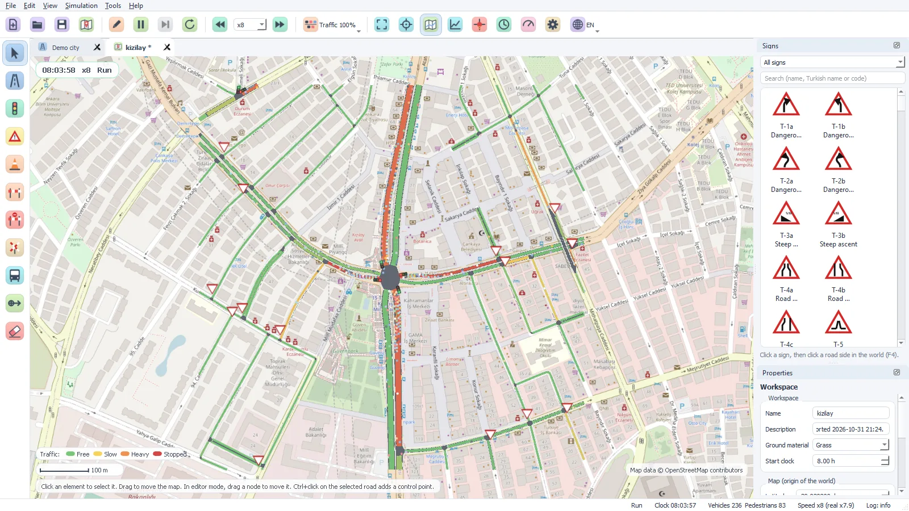
- OpenStreetMapImport with a live map
- LOS A–FFor each junction (HCM 2010)
- 186 signsTurkish traffic signs with official codes
- HTTP + JSONAPI for other programs
Import
The roads of your city from OpenStreetMap
Draw the area on a live map, or find a place with its name. Traffic Engine downloads the data from the Overpass API and makes the road network.
- Lanes, junctions, traffic lights, stop signs and give way signs
- Bus stops, crosswalks, level crossings, bridges and tunnels
- Dual carriageways become two-way roads with a median
- The map tiles show below the roads
- You can also open an .osm file
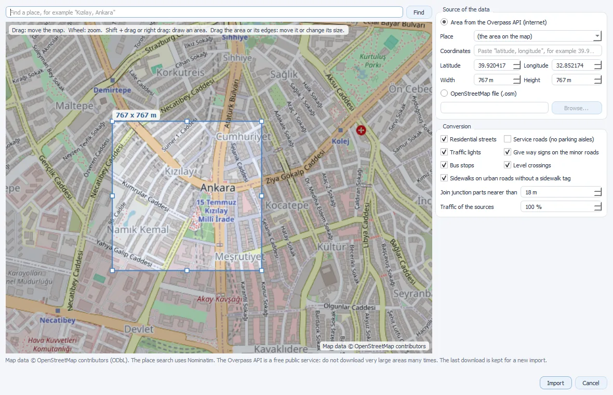
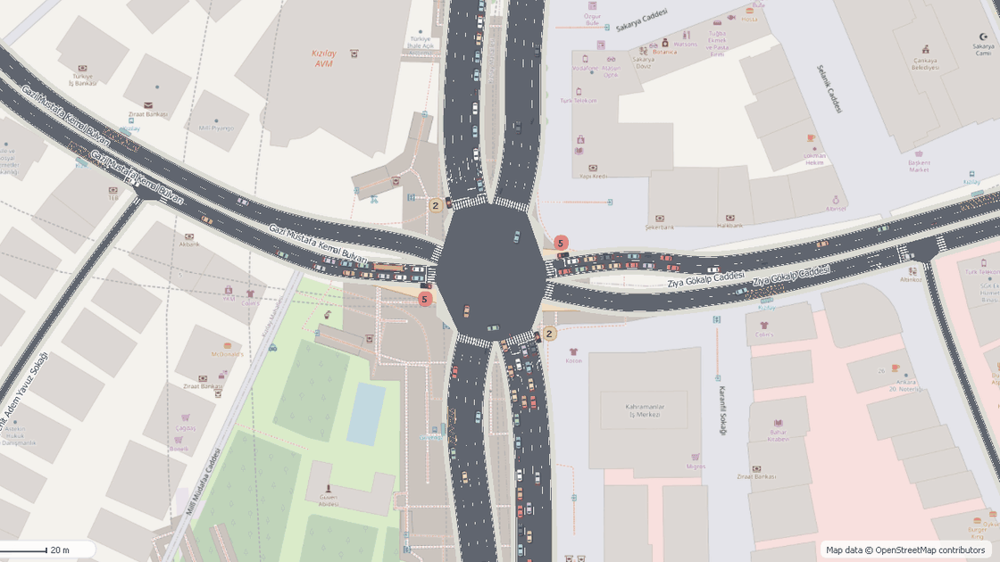
Simulation
Traffic rules at each junction
Each vehicle follows the vehicle in front of it (Intelligent Driver Model) and changes lanes when necessary. A vehicle enters a junction only if its path is clear and the exit has space for it. Thus, the vehicles do not block the junction.
- Traffic lights with fixed times, actuated control or external control
- Priority roads, stop signs, give way signs and lane rules
- Pedestrians on the crosswalks, buses at the stops, motorcycles
- A fuel and CO2 model for each type of vehicle
- Gridlock rule: a blocked network does not stop for ever
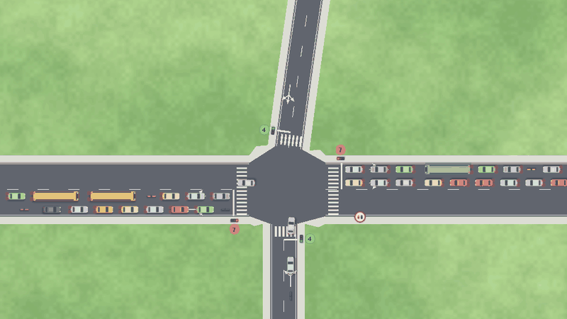
Analysis
Find the congestion
The congestion analysis shows where the traffic stops. For each junction, it calculates the delay per vehicle and the level of service (LOS A to F). The limits come from the Highway Capacity Manual 2010.
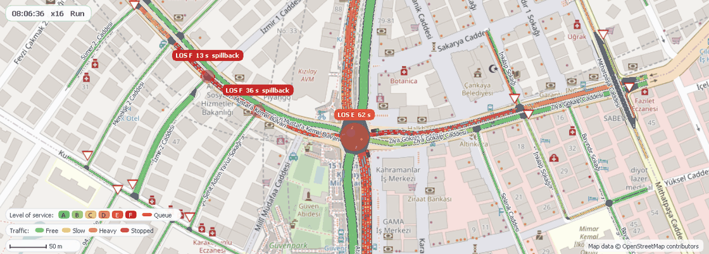
- Queue bands and LOS circles on the map, labels at the hotspots
- A list of the junctions, the worst junction first
- Delay, flow, queue length, spillback and the main cause of the waits
- Click a junction in the list: the view goes to the junction
- Export the list as a CSV file, or read it through the API
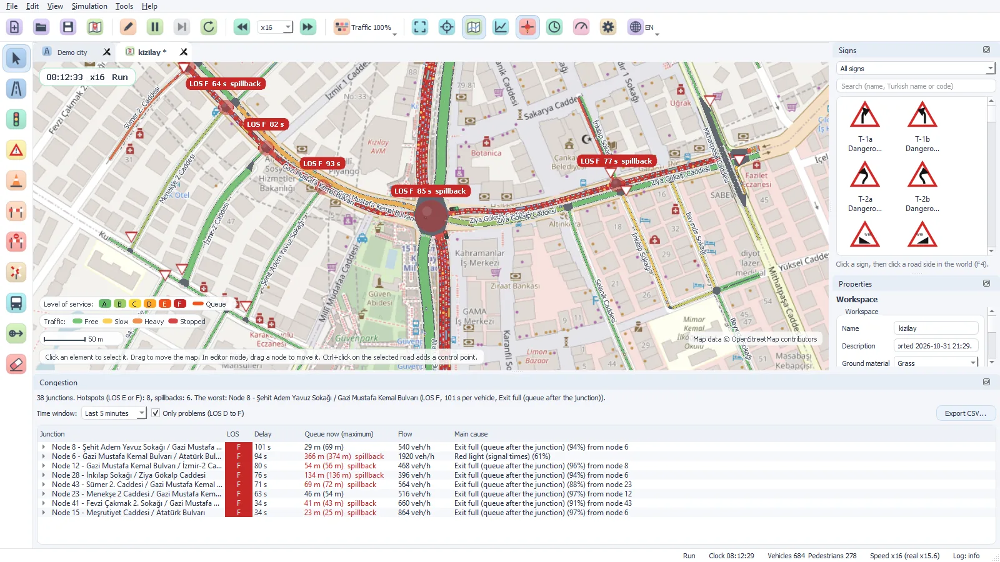
Diagnosis
Know why a vehicle waits
Select a vehicle. The State line tells why it waits: a red light, a vehicle with priority, a full exit, pedestrians or a closed lane.
The text has a link to the cause. Click the link: the view goes to that vehicle, traffic light, sign or object.
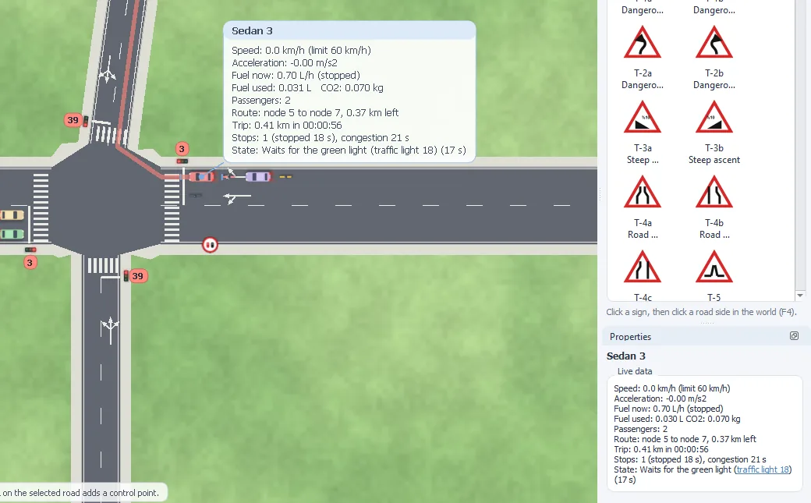
Editor
Draw and change the network
Draw roads and junctions with the mouse. Put traffic lights, signs, cones, barriers and bus stops on the roads. The property panel shows the values of the selected element. You can change them during the simulation.
- 186 Turkish traffic signs with their official codes
- Bridges and tunnels with their own tools: ramps, portals and decks show on the map
- Traffic light programs: phases, green times, all-red times and coordination
- Workspaces in .te files (XML), more workspaces in tabs
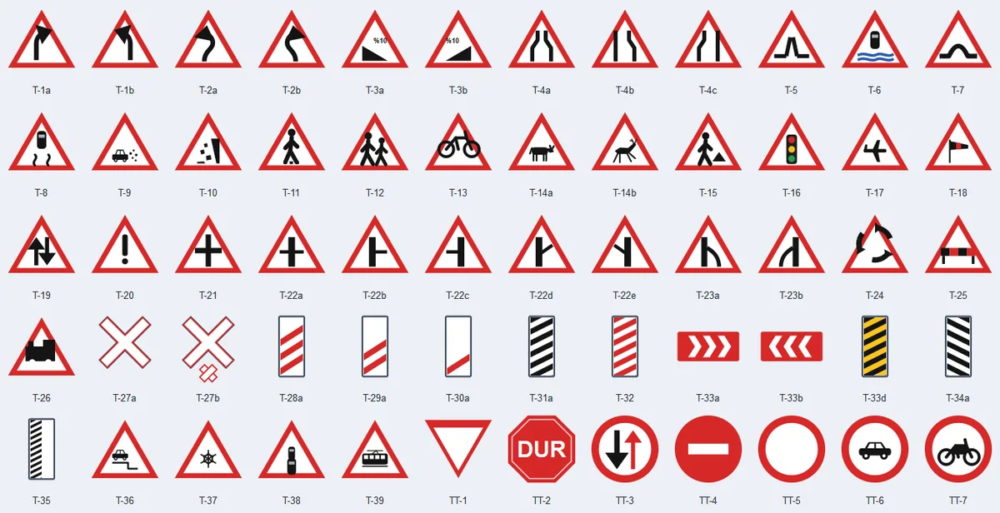
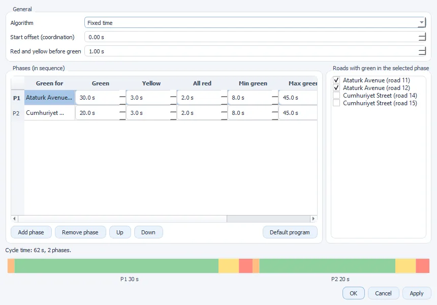
Statistics
Measure the results
The charts show the values of the simulation in time: vehicles, mean speed, waits at the junctions, stops, fuel and more. Compare the results before and after a change. Export the charts as PNG, SVG or CSV files.
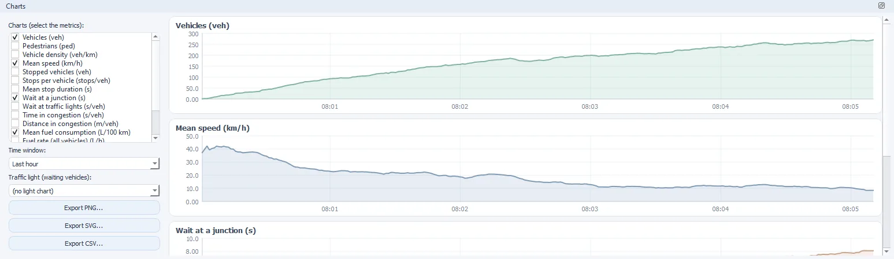
Integration
Connect other programs
The external API uses HTTP and JSON. Other programs can read the simulation state, the statistics, the vehicles and the congestion analysis.
An external traffic light controller can send the phases of the lights. The program can also export a full report in JSON format.
$ curl http://127.0.0.1:8088/api/v1/workspaces/current/congestion
{
"ok": true, "clock": "08:20:00", "window_s": 300,
"junctions": [
{
"node": 3, "signalized": true, "los": "E",
"delay_s": 66.6, "flow_veh_h": 1284,
"queue_m": 148.5, "waiting": 65,
"spillback": false,
"main_cause": "red_light", "main_cause_share": 0.64,
"approaches": [ ... ]
}
]
}Languages
English and Turkish
The user interface is in English and in Turkish. Change the language with the button on the toolbar. You do not have to start the program again.
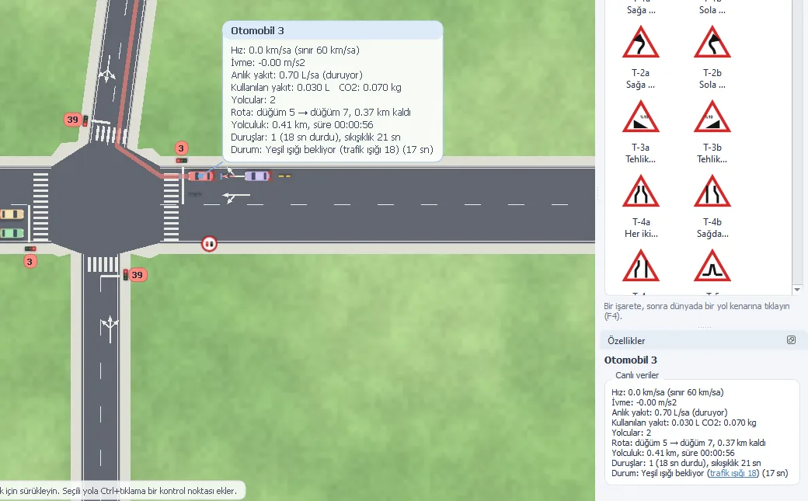
Quality
Tested with long simulations
The simulation test has no window. It simulates the traffic at the maximum speed and examines each step: vehicles that overlap, vehicles that do not move, loops of waits and errors in the reservations of the junctions.
- 15tests on 5 networks with 3 seeds
- 30 hof simulated traffic
- 74 000trips in less than 2 minutes
- 0vehicles that stopped for 300 s or more
Source code
Build the program
Requirements: Windows 10 or 11 (64-bit), Visual Studio 2022 with the C++ components and CMake.
- Start
build\setup_cots.bat. It finds or downloads the third-party components: Qt 5.12, Xerces-C and Boost. - Start
build\build_Release_x64.bat. - Start
bin\Release\traffic_engine.exe.
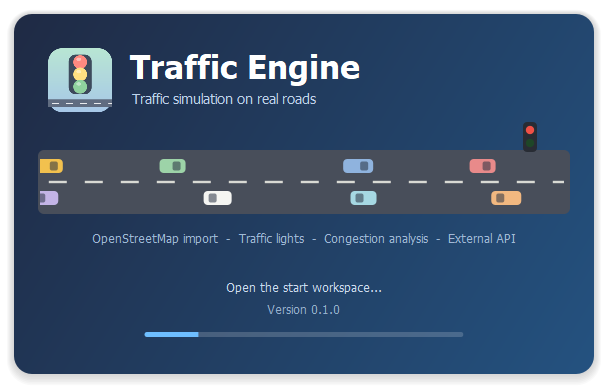